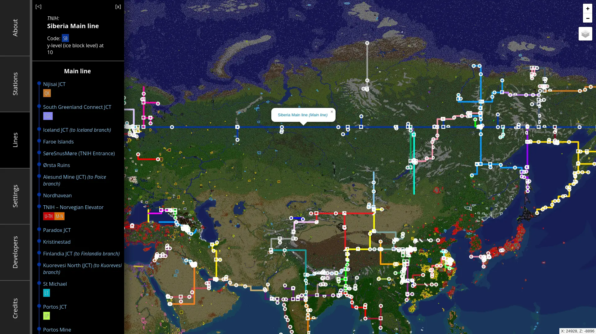
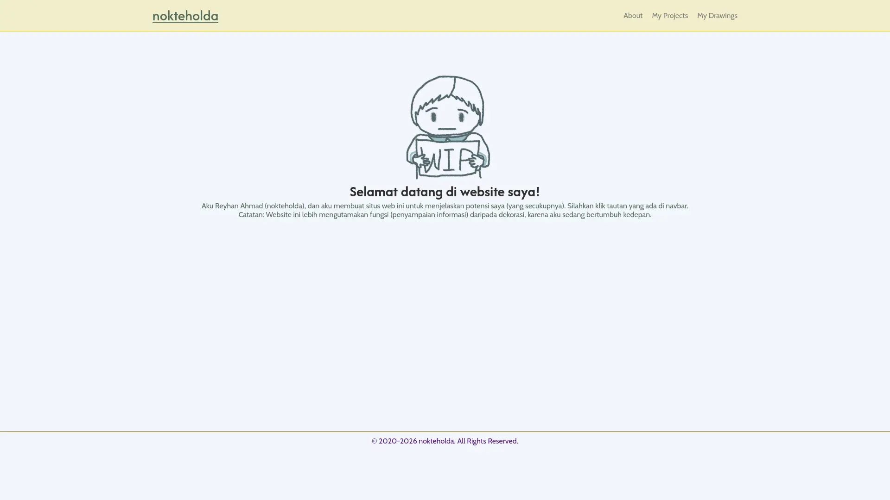

Proyek Koding
- EarthMC Ice Highway Map - Peta jalur Ice Highway di server Minecraft EarthMC (sebagian besar komit saya adalah menambahkan/modifikasi jalur yang tertampil di peta)
- SolarCiv Ice Highway Map - Versi WorldMC (server minecraftnya sudah terbengkalai)
- SolarCiv Ice Highway Map - Percobaan untuk porting ke server SolarCiv (tetapi setengah jadi karena saya tidak menanganinya lagi, karena aku lebih sering main EarthMC)
- Website Portofolio - Website yang anda lihat sekarang
- Pemanfaatan kalkulator terapan di MediaWiki (lihat videonya di bawah karena sumber berasal dari wiki yang belum dipublikasi sekarang)
Galeri

EarthMC Ice Highway Map

Website yang anda lihat sekarang